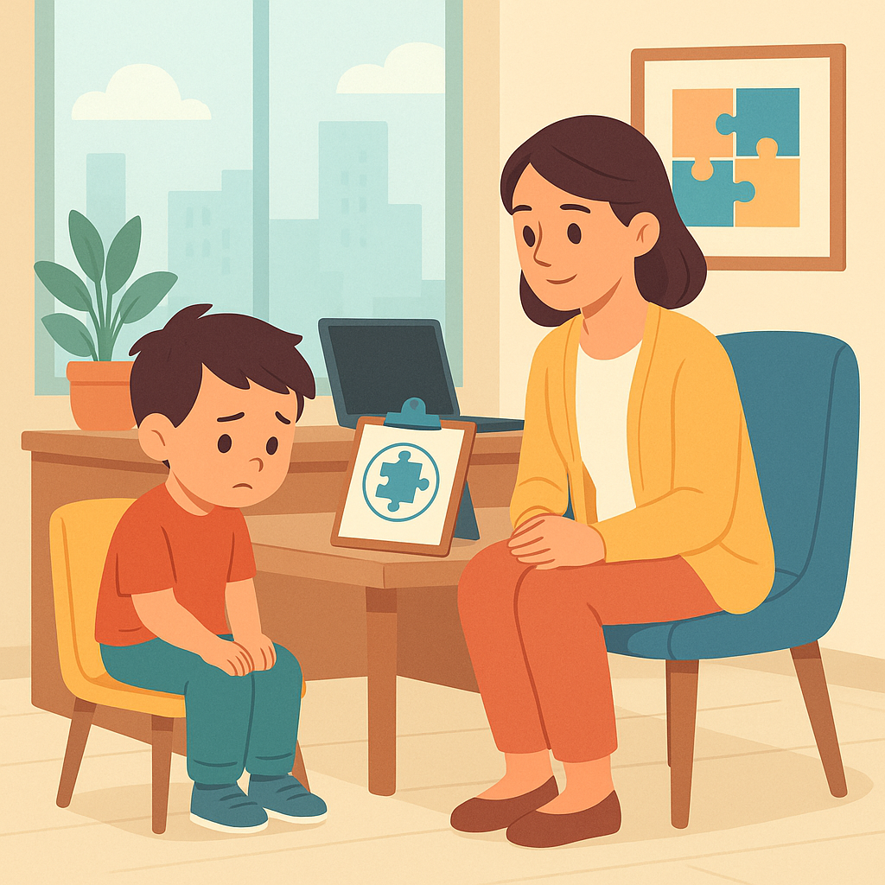

Entendendo o Autismo
Entendendo o Autismo
14 de novembro de 2025

Em se tratando de desenvolvimento infantil e qualidade de vida, poucos fatores têm impacto tão profundo quanto o momento em que se realiza o DIAGNÓSTICO PRECOCE de Transtorno do Espectro Autista (TEA). Para as famílias de crianças, esse momento pode significar a diferença entre uma trajetória pautada por intervenções eficazes desde cedo e uma caminhada marcada por atrasos, frustrações e oportunidades perdidas.
Na CLÍNICA ESPECIALIZADA EM AUTISMO EM PORTO ALEGRE, a HD 360 MOINHOS, entendemos que CRIANÇAS COM AUTISMO merecem o melhor início possível, e que a TERAPIA ABA, aliada a intervenções precoces, pode transformar possibilidades em realidades.
Neste artigo, você vai compreender por que o diagnóstico precoce é tão importante, quais sinais observar, como funciona o processo de avaliação e intervenção, e por que escolher a HD 360 MOINHOS, em PORTO ALEGRE, pode fazer toda a diferença.
O TEA é caracterizado por desafios na comunicação social, comportamentos repetitivos, dificuldades de interação e padrões de interesse específicos. Essas características variam de intensidade de uma criança para outra, o que torna cada caso único.
Realizar o DIAGNÓSTICO PRECOCE é essencial porque o cérebro infantil, especialmente nos primeiros anos de vida, possui uma alta plasticidade neuronal, ou seja, uma maior capacidade de adaptação e aprendizado. Isso significa que as intervenções realizadas logo nos primeiros sinais podem ter um impacto muito mais significativo no desenvolvimento cognitivo, social e emocional da criança.
Em resumo: quanto mais cedo o diagnóstico for feito, maiores serão as chances de desenvolvimento, autonomia e qualidade de vida. O DIAGNÓSTICO PRECOCE não é um rótulo, é uma oportunidade de construir um futuro mais independente e feliz para a criança e sua família.
Os sinais do TEA podem ser identificados já nos primeiros anos de vida, geralmente entre 12 e 36 meses. É nessa fase que pais e cuidadores devem estar atentos a comportamentos e atrasos no desenvolvimento. Quanto antes for feita a observação e o encaminhamento para avaliação, maiores serão as chances de sucesso na intervenção.
Alguns comportamentos que merecem atenção incluem:
Esses sinais podem variar, e o importante é observar o conjunto de comportamentos. Quando há dúvidas, a avaliação especializada é o passo mais seguro.
Os pais são os primeiros a perceber que algo está diferente. Estar atento aos sinais e buscar ajuda o quanto antes é fundamental. A HD 360 MOINHOS orienta as famílias de PORTO ALEGRE e região a não esperar por comparações ou “fases que passam”. O tempo é um fator decisivo no desenvolvimento da criança.
O DIAGNÓSTICO DE TEA é um processo cuidadoso e detalhado, que envolve avaliação multidisciplinar. Na HD 360 MOINHOS, o processo é conduzido por profissionais especializados em autismo, como psicólogos, terapeutas ocupacionais, fonoaudiólogos e analistas do comportamento.
A equipe realiza observações clínicas, entrevistas com os pais e aplicação de instrumentos que ajudam a compreender o perfil da criança. O objetivo é identificar com precisão as necessidades específicas de cada criança e desenvolver um plano de intervenção personalizado.
Após o diagnóstico, o passo seguinte é o início das intervenções. A TERAPIA ABA (Análise do Comportamento Aplicada) é uma das abordagens mais eficazes para o desenvolvimento de CRIANÇAS COM AUTISMO, com resultados comprovados no aprimoramento da comunicação, interação social e autonomia.
Na HD 360 MOINHOS, cada plano terapêutico é individualizado. As sessões são estruturadas conforme o ritmo da criança e incluem o envolvimento ativo da família, garantindo que as estratégias aplicadas na clínica sejam também reproduzidas em casa e na escola.
O trabalho inclui:
O acompanhamento contínuo faz com que cada avanço seja rapidamente percebido e celebrado.
Quando o DIAGNÓSTICO PRECOCE é feito e o tratamento inicia nos primeiros anos de vida, os resultados costumam ser expressivos. Crianças que recebem intervenção logo após a identificação do TEA:
Esses resultados não surgem de um dia para o outro, mas são frutos de consistência, técnica e acompanhamento especializado, que fazem toda a diferença no longo prazo.
Mesmo com os avanços da ciência e da informação, o diagnóstico precoce do TEA ainda enfrenta desafios. Em muitos casos, os sintomas se manifestam de forma sutil, o que pode atrasar o reconhecimento. Além disso, alguns pais, por receio ou falta de orientação, acabam adiando a busca por ajuda especializada.
A HD 360 MOINHOS atua justamente para reduzir esse tempo de espera, oferecendo um processo de triagem e avaliação acessível e humanizado. A equipe acolhe cada família com empatia, explicando cada etapa e apresentando caminhos de desenvolvimento possíveis.
A clínica também trabalha em parceria com escolas e outros profissionais da saúde, garantindo que o acompanhamento da criança seja integrado e contínuo.
Quando o assunto é DIAGNÓSTICO PRECOCE DE TEA, é essencial escolher um espaço que una ciência, empatia e experiência. A HD 360 MOINHOS, localizada em PORTO ALEGRE, se destaca justamente por reunir esses pilares.
Aqui, a equipe oferece:
Escolher a HD 360 MOINHOS é escolher um cuidado completo, humano e baseado em evidências, com o olhar voltado para o futuro de cada criança.
O DIAGNÓSTICO PRECOCE de TEA é muito mais do que um simples ato médico, é um gesto de amor e responsabilidade. É o primeiro passo para abrir caminhos de aprendizado, inclusão e independência.
Na HD 360 MOINHOS, em PORTO ALEGRE, cada criança é acolhida com respeito à sua singularidade. O objetivo é proporcionar um futuro mais autônomo, confiante e feliz, tanto para os pequenos quanto para suas famílias.
Se você observa sinais de atraso no desenvolvimento do seu filho, não espere. Quanto mais cedo agir, maiores serão as possibilidades de progresso.
Agende uma avaliação com a equipe da HD 360 MOINHOS e descubra como o diagnóstico precoce pode transformar o presente e o futuro da sua criança.